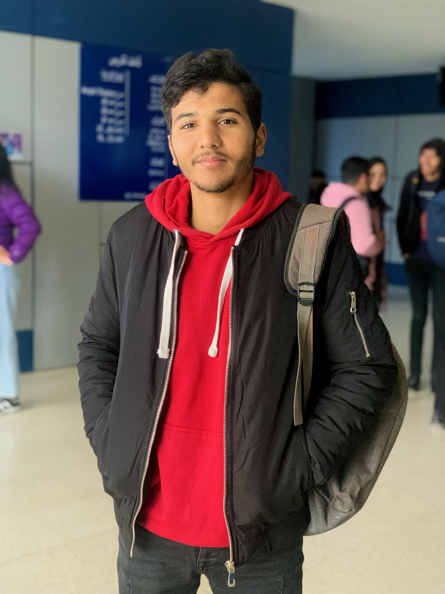

Hi. I'm chiheb
A Student at the Higher Institute of Computer Science
ABOUT ME
I am Chiheb Channoufi. I was born in Siliana and currently living in El Krib. I moved to Kef to pursue my bachelor's degree in the field of computer science. I'm passionate about this field and motivated to enhance my knowledge and skills to become an expert in my field
EDUCATION
I started my educational journey at primary school March 2, 1934. After completing my primary studies, I continued my education at Krib College. Later, I attended Baji Messaoudi High School in Krib and obtained my computer science baccalaureate in 2022 at the age of 18. Motivated by my passion for computer science, I decided to pursue a degree in this field at the Higher Institute of Computer Science in El Kef. This decision was guided by my desire to further enhance my knowledge and skills in the field of computer science
CONTACT ME
LE Krib,Siliana,Tunisia
+21690527444
channoufichiheb@gmail.com
© 2023 par chiheb channoufi